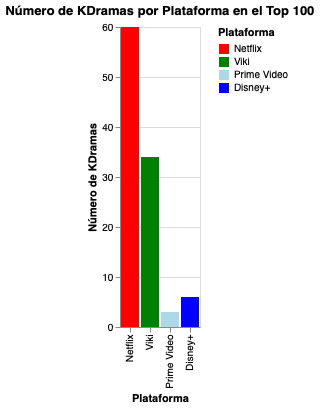

Las plataformas de streaming han sido una catapulta para los kdramas, sacándolos de la burbuja de Corea para llevarlos a todo el mundo, teniendo un alcance global inimaginable, lo que ha aportado en gran manera al éxito que han tenido los kdramas a lo largo y ancho del mundo, especialmente en Sudamérica y, más aún, en Chile, donde la Hallyu u ola coreana ha sido todo un fenómeno en nuestro país.
En ese sentido, las plataformas de streaming han jugado un papel fundamental, siendo un canal entre Corea y el mundo, trayendo a Chile los kdramas más importantes y vistos del momento.
La oferta de plataformas de streaming es notoria. Tenemos Netflix, Amazon Prime Video, Disney+ y Viki, entre otras, las cuales generan todo un ecosistema donde el espectador puede acceder a ver kdramas. Ahora, ante esta gran oferta de plataformas, es lógico pensar que debemos quedarnos con una para ver, y una buena forma de saberlo es conocer cuál plataforma tiene los mejores kdramas.
En esa línea surge la gran interrogante que guía esta visualización:
Primero, ¿cómo podemos definir los mejores kdramas? Para ello, decidí tomar las valoraciones del público como la variable que define los "mejores kdramas", entendiendo que el público valora positivamente aquellos kdramas que considera buenos.
En continuación, tomé los 100 mejores, es decir, los 100 kdramas con mejor valoración, los cuales pasarían a ser la muestra a trabajar para encontrar la plataforma que posea la mayoría de ellos.
Luego de hacer la visualización, podemos concluir que Netflix es, con amplia diferencia, la plataforma que posee más kdramas dentro de este Top 100.
Finalmente, podemos concluir que Netflix es la plataforma que concentra la mayor cantidad de kdramas mejor valorados dentro de la muestra analizada.

Gráfico que muestra la cantidad de kdramas presentes en el Top 100 según la plataforma de streaming donde se encuentran disponibles. Tal como podemos ver, Netflix lidera ampliamente la cantidad de kdramas presentes dentro de los 100 mejor valorados de la muestra.
Para ver toda la información de estos y todos los kdramas visita MyDramaList, donde podrás ver el detalle completo de los kdramas más famosos.